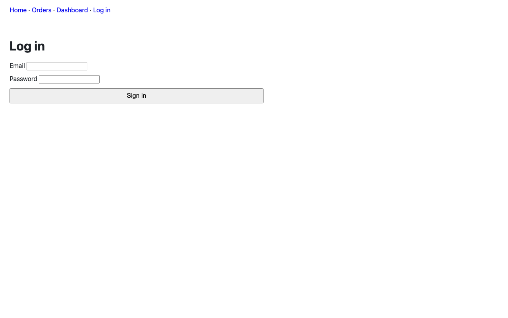
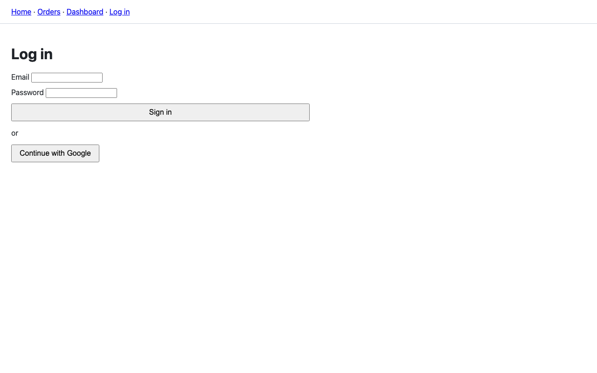
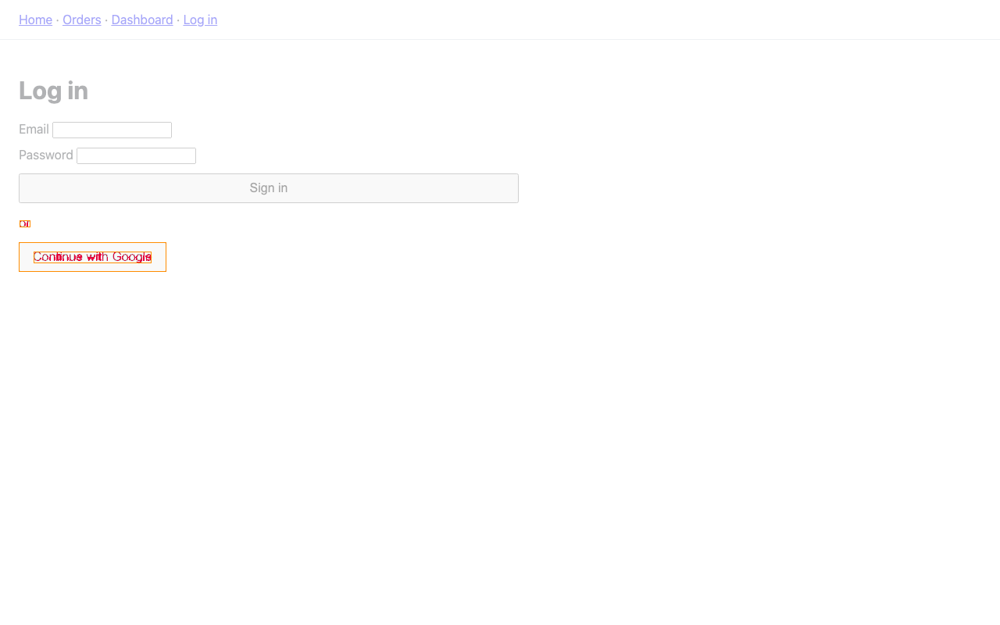

bdiff report success
- Repository
- /demo/fixture-repo
- Base
- main @ 5ed6bbca38
- Head
- pr/ui-change @ 631588425c
- Duration
- 1 min 21 s
- Cost
- LLM $0.0000 · containers 159 s
- Run
- 01m4h5ajknr6c2exfpp6wzagck · 2026-10-09T20:22:57.397Z · bdiff a1600304860bc2617b554c74ea606836258fc0ed-dirty
- LLM
- llm fake Canned answers, no model was called: the interpretation is a placeholder. Set ANTHROPIC_API_KEY for a real one.
Summary
risk: low 2 info 2 findings
- [fake] 2 finding(s) on /login. text /loginvisual /login
- [fake] Kinds: text, visual. No model read the PR's intent. text /login
Not verified: [fake] Canned interpretation (--llm fake): no model was called. Set ANTHROPIC_API_KEY for a real one.
Interpreted by canned.
Evidence & coverage
Stages: workspace → impact → recipe → environment → probe-ui → probe-api → diff → interpret
- Pages probed
- /login
- Endpoints probed
- —
- Impact confidence
- high
Everything the change can affect was probed.
UI changes
/login
info
text
/login
+ or+ Continue with Google
info
visual
/login
3 changed regions, within x 24, y 282, 189×66 px.



Details
Stages
| Stage | Outcome | Duration |
|---|---|---|
| workspace | success | 90 ms |
| impact | success | 71 ms |
| recipe | success | 2 ms |
| environment | success | 1 min 16 s |
| probe-ui | success | 4 s |
| probe-api | success | 0 ms |
| diff | success | 112 ms |
| interpret | success | 14 ms |
LLM usage
No LLM calls.
Recipe
- App
- . (install in .)
- Runtime
- Node 22, pnpm 12.9.1
- Install
- pnpm install --frozen-lockfile
- Build
- pnpm run build
- Start
- pnpm exec next start -p 3000 -H 0.0.0.0 (port 3000, health /api/health)
- Services
- none
- Env
- none
- Confidence
- high